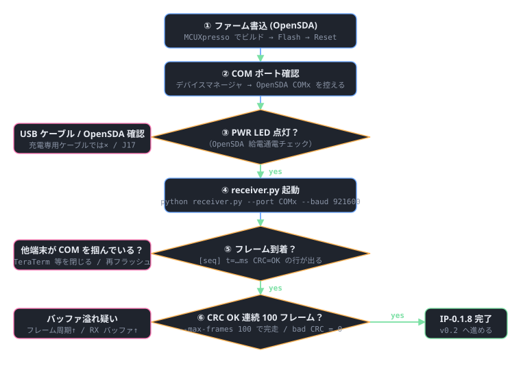

事前準備（実機を待つ間にやっておくこと）
- MCUXpresso IDE 11.9+ を導入し、
frdmmcxn947SDK をダウンロード - 本リポを clone、
firmware/projects/01_dummy_emitter/main.cを含む空プロジェクトをビルドできることを確認 - PC 側で
python -m unittest test_frame_format test_loopback -vが全 PASS することを確認（実機なしで実証可能なソフト品質はここまで担保） - OpenSDA J17 用 micro-USB ケーブル（充電専用は不可、データ通信対応）を確保
- 余裕があれば MinGW-w64 を入れて
firmware/host_build && makeを実行 →test_ctypes_packerも走るようになる
ブリングアップ判断フロー

ステップ詳細
① ファーム書込
# MCUXpresso IDE で:
# 1) New Project → frdmmcxn947 → driver_examples/lpuart/polling_transfer をベース
# 2) main.c を firmware/projects/01_dummy_emitter/main.c で置き換え
# 3) firmware/shared/source/ichiping_frame.c, dummy_audio.c を追加
# 4) Includes に firmware/shared/include を追加
# 5) Build → Debug As → OpenSDA で Flash
② COM ポート確認
Windows: デバイスマネージャ → 「ポート (COM と LPT)」配下に OpenSDA - CDC Serial Port (COMx)。番号をメモ。Linux/macOS: ls /dev/ttyACM*。
③ PWR LED 点灯確認
| 症状 | 原因 | 対処 |
|---|---|---|
| PWR LED 消灯 | USB ケーブルが充電専用 | データ通信対応ケーブルに交換 |
| OpenSDA LED が点滅し続ける | SDA ファームの bootloader モード | J17 から繋ぎ直し / Reset ボタン押下 |
| COM 番号が見えない | OpenSDA ドライバ未導入 | NXP の opensda-driver を入れる（Windows のみ） |
④ receiver.py 起動
cd pc
conda activate ichiping # or .\.venv\Scripts\Activate.ps1
python receiver.py --port COMx --baud 921600 --out ../captures --max-frames 100
期待される出力（3 秒に 1 行ずつ）:
opening serial:COM7@921600
writing to D:\GitHub\IchiPing\captures
waiting for frames... (Ctrl+C to stop)
[ 0] t= 3001ms sr=16000 N=32000 servos=[ 17.0, 65.0, 82.0, 3.0, 41.0] CRC=OK (0.33 fps)
[ 1] t= 6002ms sr=16000 N=32000 servos=[ 33.0, 12.0, 7.0, 88.0, 56.0] CRC=OK (0.33 fps)
...
[ 99] t= 300010ms sr=16000 N=32000 servos=[ 22.0, 81.0, 14.0, 47.0, 60.0] CRC=OK (0.33 fps)
saved 100 frames (bad CRC: 0) to ..\captures
⑤ / ⑥ フレーム取得と CRC 検証
| 症状 | 原因 | 対処 |
|---|---|---|
PermissionError で開けない |
他プログラムが COM を占有 | TeraTerm / MCUXpresso のターミナルを閉じる |
frame error: only got X/Y bytes |
ボーレート不一致 | firmware 側 ICHP_UART_BAUD を確認 |
CRC BAD が定期的 |
バッファ溢れ |
・fc.serial_rx_buffer_size を 1 MB に拡大・firmware の ICHP_FRAME_PERIOD_MS を 5000 に伸ばす
|
| 何も来ない（タイムアウト連発） | ファームが走っていない / TX ピン未接続 | PRINTF の起動メッセージが端末に出るか別 COM で確認（バイナリ COM と PRINTF COM は別経路） |
| 「frame_error: bad magic」が連発 | UART パリティ / フレーム同期ずれ | MCU 側設定が 8N1 / フロー制御なしか確認 |
完了基準（IP-0.1.8 のチェックボックス）
- ☐
receiver.py --max-frames 100が bad CRC = 0 で完走 - ☐
captures/labels.csvに 100 行記録される - ☐
captures/frame_000099.wavを音声プレイヤで再生し、200→8 kHz のスイープ + 残響が聞こえる - ☐
seq列が 0〜99 まで 欠番なし
すべて埋まったら tasks.html の IP-0.1.8 を completed に。次は v0.2（INMP441 接続）に進む。
収集データの軽い目視確認
# Python REPL で WAV のスペクトログラム確認（実機チェック後）
import wave, numpy as np, matplotlib.pyplot as plt
with wave.open("captures/frame_000050.wav", "rb") as wf:
raw = wf.readframes(wf.getnframes())
x = np.frombuffer(raw, dtype=np.int16).astype(np.float32) / 32768.0
plt.specgram(x, NFFT=512, Fs=16000); plt.show()
200→8 kHz のスイープ + 指数減衰ノイズが見えれば dummy_audio_generate が正常に動作。